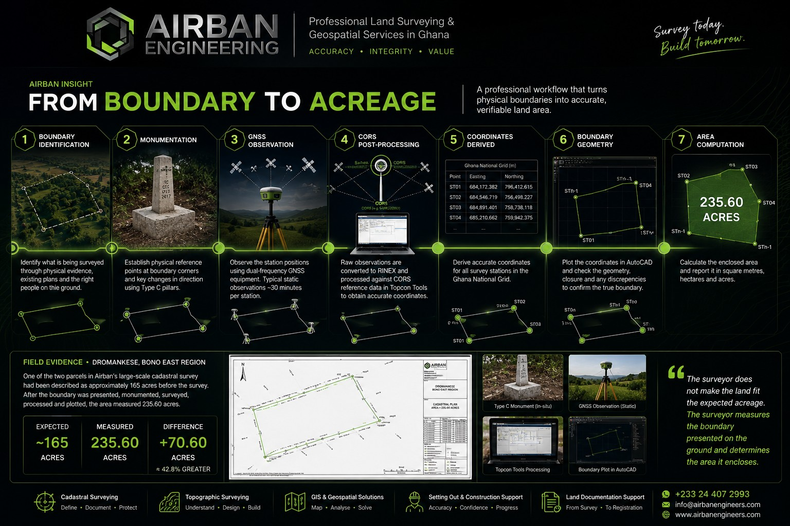
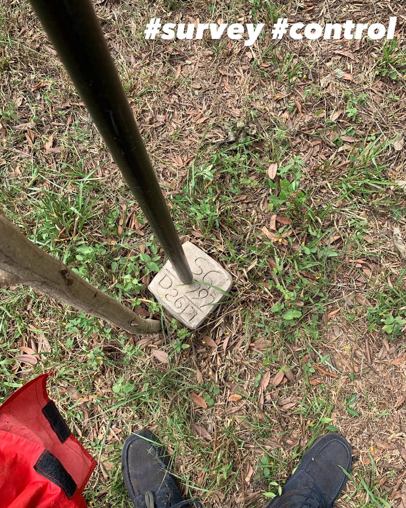
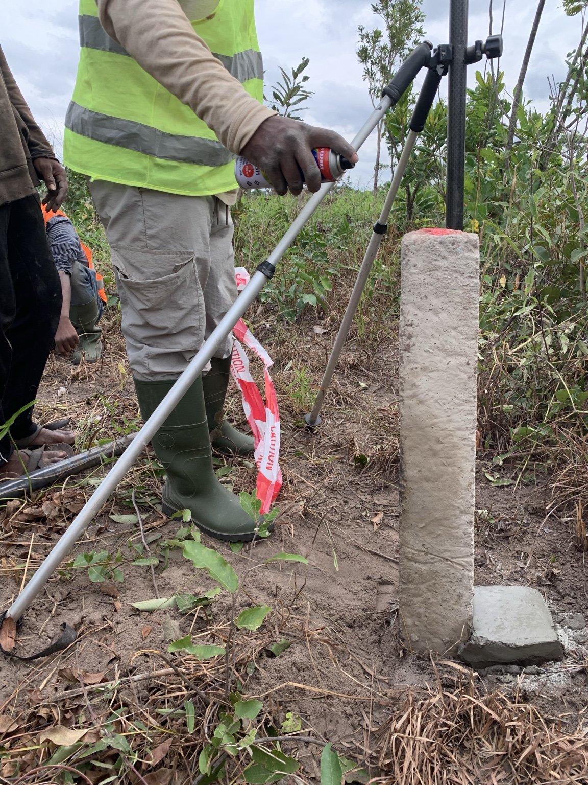
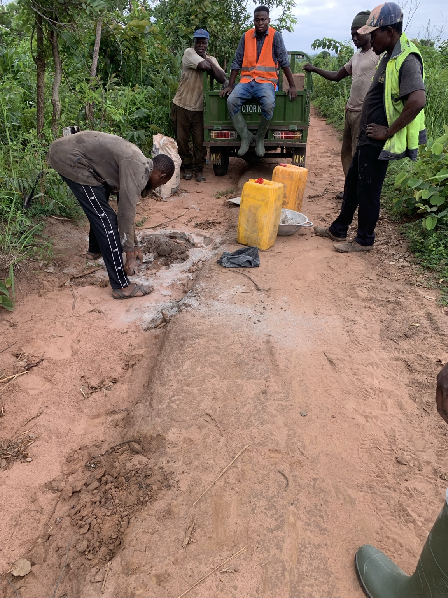
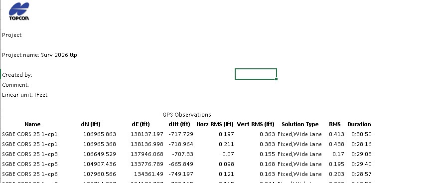
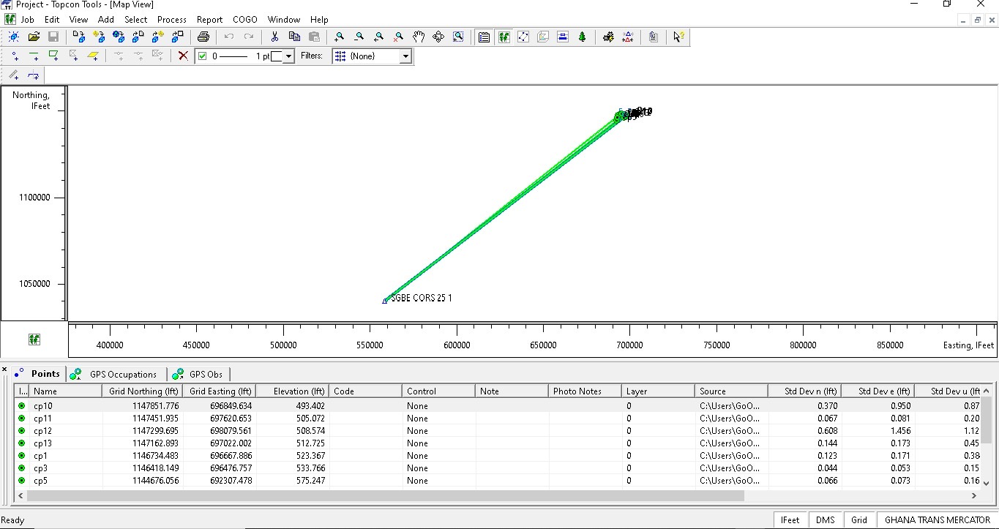
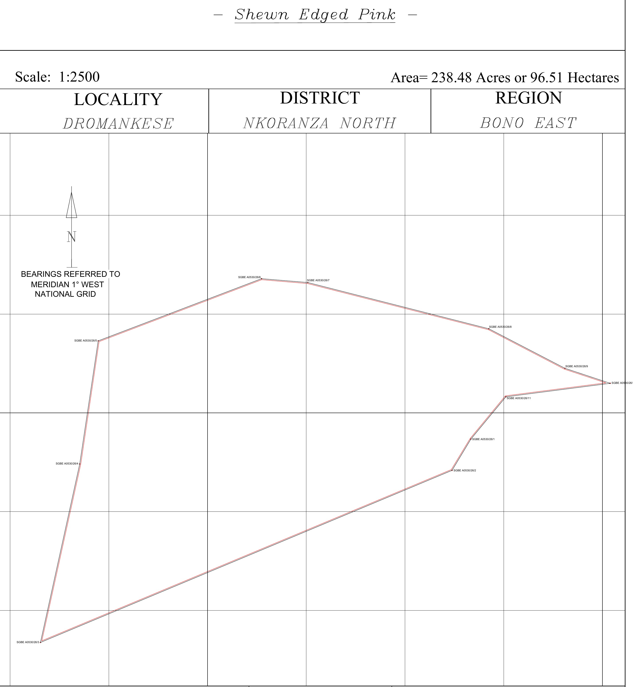
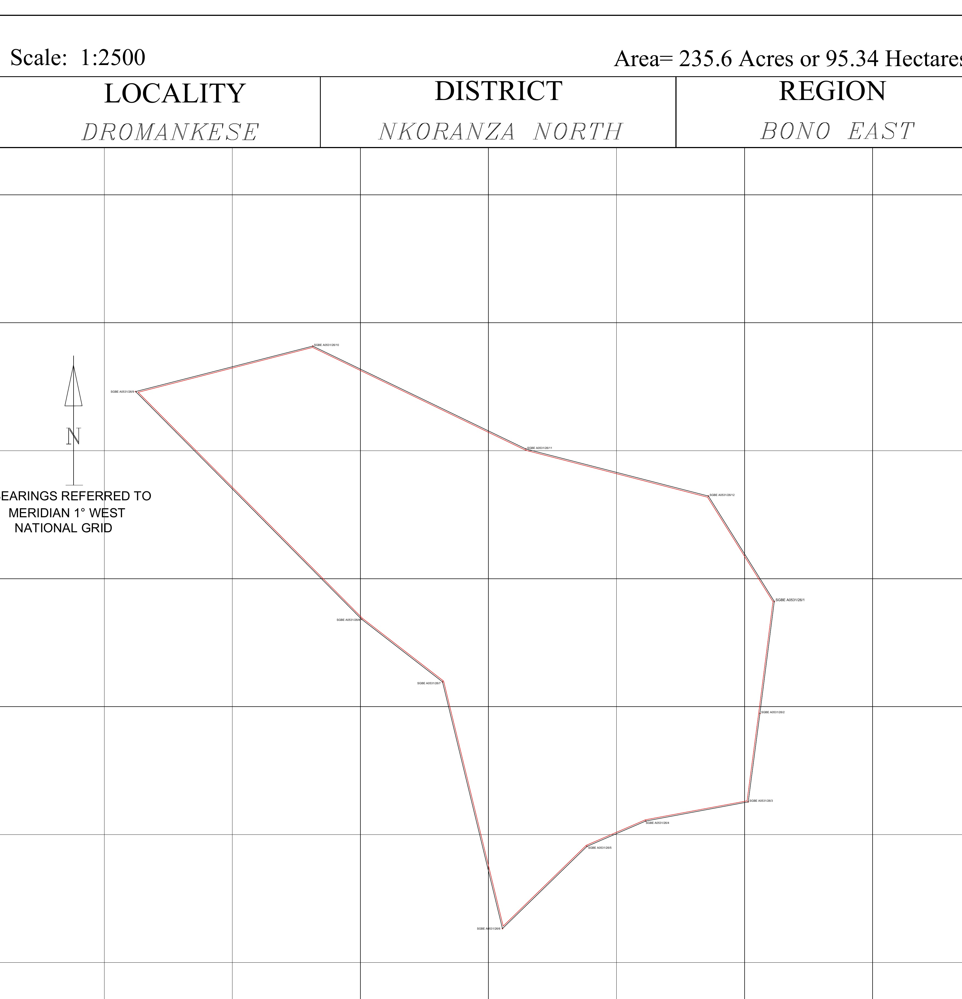

A parcel may be described as 50 acres, 100 acres or 200 acres. But until its boundary has been properly identified and surveyed, that figure can still be an expectation rather than a survey-derived area.
During a recent large-scale cadastral survey undertaken by Airban Engineering in Dromankese, Bono East Region, one of two parcels had been expected to contain approximately 165 acres. After the boundary presented on the ground was monumented, observed, processed and plotted, the calculated area was 235.60 acres.
The difference was 70.60 acres — approximately 42.8% greater than expected. The survey had not created additional land. It had measured the area enclosed by the boundary that was actually presented and surveyed.

1. Acreage Is an Output, Not the Starting Point
An acre is a unit of area. It describes how much surface area is enclosed by a boundary, but it does not independently tell the surveyor where that boundary is located.
Two parcels can contain the same acreage while having completely different shapes, dimensions and boundary configurations. For that reason, a stated acreage cannot substitute for the actual identification and measurement of the parcel boundary.
2. Everything Begins With the Boundary
Before GNSS observations, coordinates or CAD drawings can mean anything, the surveyor must understand what land is actually being presented for survey. Depending on the assignment, that may involve existing plans, physical boundary evidence, known monuments and information from the appropriate landowner, family representative or other authorised person.
A surveyor should not manufacture a boundary simply to obtain the acreage that someone expects. The relevant boundary must first be identified or established; the measurements then determine the area it encloses. This is also why professional boundary and cadastral surveying begins with parcel definition rather than area computation.
3. Monumentation Turns the Boundary Into Physical Reference Points
Once the appropriate boundary positions have been identified, survey stations can be established at the corners and changes in direction. Where permanent monumentation forms part of the assignment, these stations provide recoverable physical reference points on the ground.


During the Dromankese project, Airban used both precast monuments and in-situ Type C construction. The objective in either case was the same: to create durable physical references for the boundary positions established in the field.
4. GNSS Observations Turn Stations Into Measured Positions
Establishing a monument tells us where a boundary station physically exists. GNSS observation allows that station to be assigned a measured coordinate position within the survey reference framework.
For the Dromankese assignment, Airban used an ALPHA GEO dual-frequency receiver in static mode, with typical station occupations of approximately 30 minutes. These observations collected the satellite data required for subsequent post-processing.

5. Raw GNSS Data Is Not Yet a Cadastral Plan
The fieldwork may be complete, but the survey is not. Static GNSS observations still need to be referenced and processed before they become usable survey-station coordinates.
For AE-FJ-001, raw receiver observations were downloaded, converted to RINEX, and processed against reference data from CORS station SGBE202501. The resulting station positions were handled in the Ghana National Grid for the cadastral workflow. The project technical record documented processed RMS values generally within the adopted 0.1–0.4 project range.


6. Coordinates Become Boundary Geometry
Once reliable station coordinates are available, they can be plotted in their correct sequence to reproduce digitally the parcel boundary established on the ground. For the Dromankese project, the processed points were imported into AutoCAD for plotting and review.
The surveyor then considers the parcel configuration, station relationships and relevant closure or consistency checks before relying on the geometry for area computation and plan preparation. Software performs calculations, but professional review is still required to confirm that the geometry properly represents the field observations.
7. Only Then Is the Enclosed Area Calculated
Once the verified station coordinates define the closed parcel polygon, the enclosed area can be calculated and expressed in square metres, hectares, acres or the unit appropriate to the assignment.
When an Expected ~165 Acres Surveyed at 235.60 Acres
One parcel in Airban Engineering's Dromankese assignment had initially been described as approximately 165 acres. It had not been physically demarcated before the field team's arrival. Once the boundary positions were presented, Airban monumented and surveyed them.
By approximately the seventh boundary station, the field team could already see that the extent being presented materially exceeded the preliminary expectation. The survey was not stopped at 165 acres, nor were the boundary positions adjusted to make the resulting area correspond with that figure.
Airban did not “find” 70.60 extra acres. The survey established that the boundary positions presented and measured on the ground enclosed approximately 235.60 acres. Questions of ownership, entitlement or acquisition relating to any difference are separate from the geometric result of the survey.
Explore the complete 474.08-acre Dromankese project case study →
8. It Wasn't the Only Parcel
The second parcel involved in the same assignment had been described shortly before mobilisation as approximately 225 acres and produced a survey-derived area of 238.48 acres.
| Parcel | Pre-field expectation | Survey-derived area | Difference |
|---|---|---|---|
| Parcel 01 | ~225 acres | 238.48 acres / 96.51 ha | +13.48 acres |
| Parcel 02 | ~165 acres | 235.60 acres / 95.34 ha | +70.60 acres |
| Combined | ~390 acres | 474.08 acres / 191.85 ha | +84.08 acres |


These drawings are project-stage draft outputs. Professional/statutory certification and final approved deliverables remain separate project stages.
9. So Which Figure Is the “Real” Acreage?
For surveying purposes, the calculated area comes from the measured geometry of the boundary surveyed. But there is an important limitation: survey-derived area does not by itself determine legal ownership of every part of the land enclosed.
Surveying establishes geometry. Ownership and interests also depend on the appropriate land documentation, searches and statutory processes. This is why a boundary survey and an Official Search Report answer different but complementary questions during land due diligence.
10. Why Can Stated and Surveyed Acreage Differ?
A difference does not automatically mean that somebody has acted improperly. The original figure may simply have been an approximation; the parcel may never have been comprehensively surveyed; monuments may be missing or misunderstood; older survey information may have limitations; or the boundary presented during the new survey may differ from earlier assumptions.
The correct professional response is to understand the discrepancy rather than immediately interpret it as fraud, encroachment or proof of additional ownership.
11. Why This Matters Before You Buy Large Land
Imagine negotiating a major land transaction based solely on the statement that a parcel is approximately 100 acres. What happens if the surveyed boundary encloses 82 acres? Or 127 acres? The financial and planning implications can be substantial.
The lesson is not “never trust the seller.” The lesson is simpler:
For buyers, this sits naturally alongside broader due diligence. Airban's guide to surveying before buying land explains why the field verification should come before relying entirely on documents, while the land registration guide explains what follows during the documentation process.
12. What Should a Landowner or Buyer Have Ready?
Where available, provide the surveyor with existing site plans or survey information, known monuments, relevant documents and access to a person who genuinely understands the property boundary. For substantial parcels, boundary readiness should be confirmed before a full field mobilisation wherever practicable.
This is particularly important where teams, equipment, monumentation materials and travel logistics must be mobilised over considerable distances.
The surveyor does not make the land fit the expected acreage.
The surveyor measures the boundary presented on the ground and determines the area it encloses.
13. What Happens After Acreage Is Determined?
Area computation is not necessarily the end of a cadastral assignment. Depending on the scope, the processed boundary information may then support draft plan preparation, professional review, certification and subsequent land documentation or registration work.
Clients should therefore distinguish between measuring the parcel, preparing the required survey documentation and completing the professional or statutory processes that may follow. Airban's service packages are structured around these different client needs.
Boundary First. Acreage Follows.
Whether a parcel is described as 1 acre, 100 acres or 500 acres, the fundamental surveying question remains the same: Where is the boundary, and what area does that boundary actually enclose?
Once that boundary has been properly identified, measured, processed and plotted, its area can be established. A professional survey should not be forced to confirm an expected acreage. The acreage should be allowed to emerge from the survey evidence.